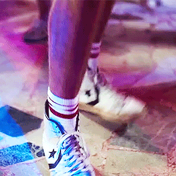
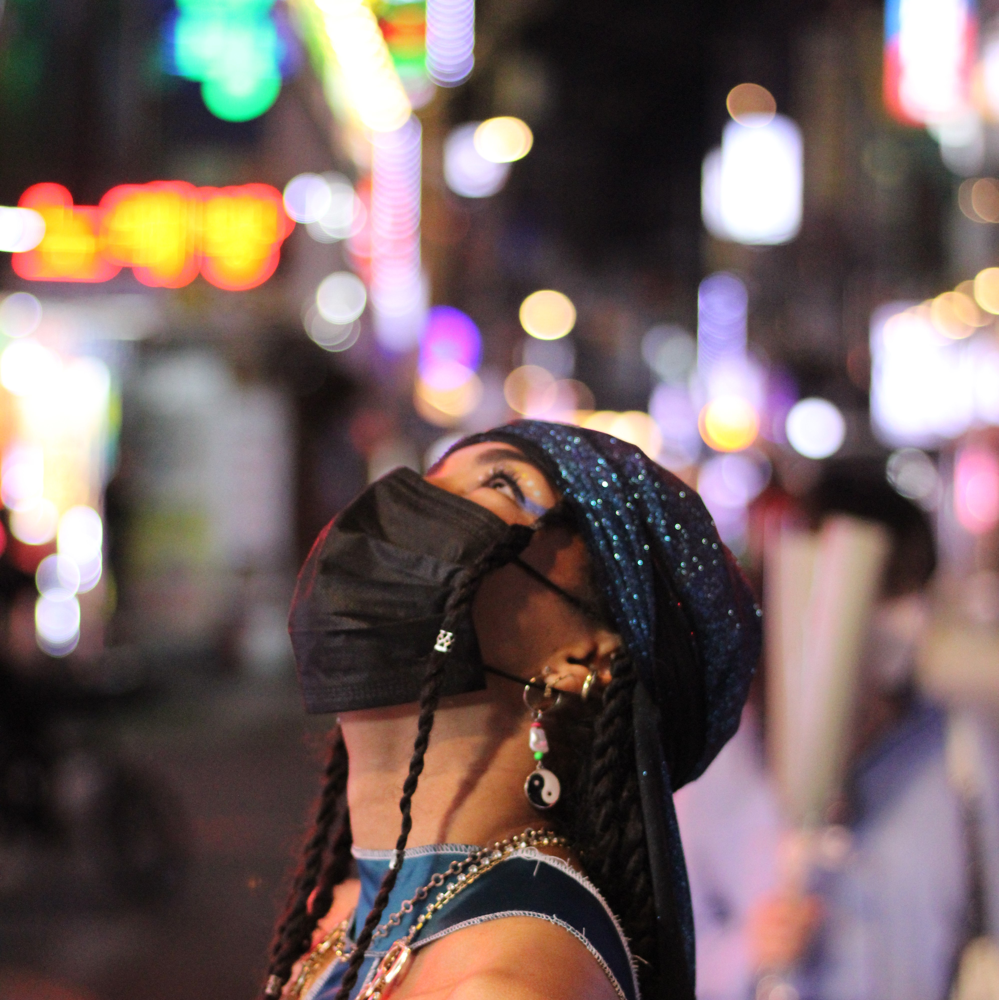

Hello everyone! I am Marion and I am 21 years old, I have been studying in a business school for the past 4 years and now I am lucky enough to be part of the fabulous brand project ESSENCE! On my profile, I will introduce you to my different passions surrounding the Art industry. I hope that you learn more about the ESSENTIALS that make me who I am through this page, enjoy!
Discover my creative work via @bymawenaIf you are looking for me in a crowd of people, just focus for a second and try to look for someone whose head is bopping.
You guessed it right, I am all in when it comes to dance. I started dancing at an early age, and since I got into a dance studio, it is like a fever hit me and I could never stop the flow of music pulsating through my whole body. "What are you doing?" Is always shouting my dad at me, trying to understand the sudden pulsions I have to move a shoulder or jump a bit. I just cannot help it! With dance comes music, and I think my dad would not be surprised if he knew my passion for both these elements came from him. (If you peek through his office door, you would see him do the exact same thing...) Long story short, I believe dance is a language and music a tone, I just love expressing myself through it and I could even say that I feel more comfortable moving than speaking. Each person has its self body language and I find it beautiful how we can communicate with our bodies. So, just as some people feel like talking for hours, I will just Keep Moving!
Check out my favorite dance performance!
My brain is never off. As it can be a curse, it is also a blessing when it comes to daydreaming and creativity.
I have always loved creating and expressing myself through arts: whether it is through playing the piano, dancing, drawing, taking pictures and videos... I have always been interested in representing my imagination into concrete visuals. Everything and anything inspires me, this is why I call this process "overstimulation". It is part of who I am and makes me a passionate individual, so as tiring as it can sometimes be, I try to embrace it and all the ugly that comes with it (inspiration blanks, perfectionism, lack of satisfaction, discouragement,...)
Check out my creative visuals!
To me, cosmetics are also a way to express ourselves, just like fashion. I like the creativity revolving around it but also the self-care dimension entied to it.
Choosing to do a project around a cosmetic product felt very natural and inspiring to me. I designed a website and an item wondering what I would like to see, what could please me and others, imagining having an experience on the platform. It was pleasing as much as challenging as we get to think about things we might forget as they are naturally part of our daily lives. There is a whole dimension around beauty and aesthetics that makes it satisfying to work on this kind of project as it is very important to please the eye as well as the expectations of the client.